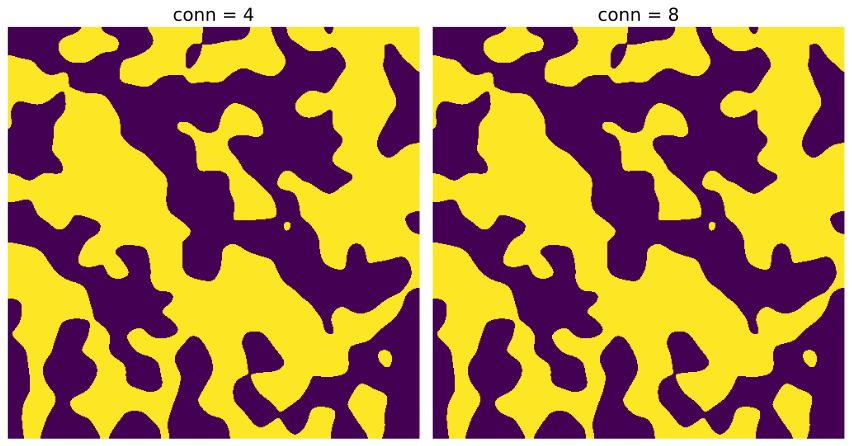
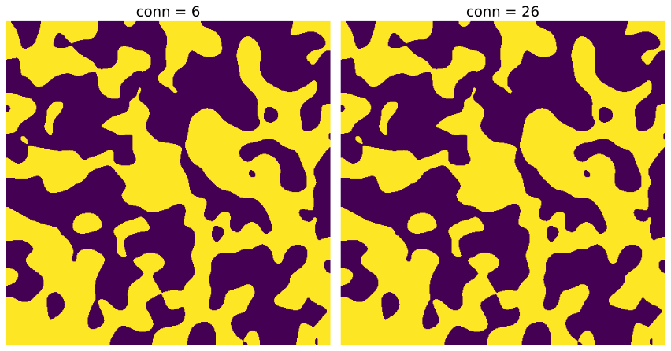

trim_floating_solid#
trim_floating_solidfunction is a filter which removes solids not attached to primary solid structure.
import numpy as np
import porespy as ps
import scipy.ndimage as spim
import scipy
import matplotlib.pyplot as plt
import skimage
ps.visualization.set_mpl_style()
im#
How floating solids are removed and the result can depend on whether the image is 2D or 3D so here we investigate both cases. The 2D and 3D images are visualized but only a slice of the 3D image is shown.
im2d = ps.generators.blobs(shape=[500, 500])
im3d = ps.generators.blobs(shape=[500, 500, 500])
fig, ax = plt.subplots(1, 2, figsize=[12, 12]);
ax[0].imshow(im2d);
ax[0].axis(False);
ax[0].set_title('2D', fontdict={'fontsize': 18});
ax[1].imshow(im3d.take(indices=250, axis=2));
ax[1].axis(False);
ax[1].set_title('3D', fontdict={'fontsize': 18});
---------------------------------------------------------------------------
KeyboardInterrupt Traceback (most recent call last)
Cell In[2], line 4
1 im2d = ps.generators.blobs(shape=[500, 500])
2 im3d = ps.generators.blobs(shape=[500, 500, 500])
----> 4 fig, ax = plt.subplots(1, 2, figsize=[12, 12]);
5 ax[0].imshow(im2d);
6 ax[0].axis(False);
File /opt/hostedtoolcache/Python/3.8.16/x64/lib/python3.8/site-packages/matplotlib/pyplot.py:1502, in subplots(nrows, ncols, sharex, sharey, squeeze, width_ratios, height_ratios, subplot_kw, gridspec_kw, **fig_kw)
1358 """
1359 Create a figure and a set of subplots.
1360
(...)
1499
1500 """
1501 fig = figure(**fig_kw)
-> 1502 axs = fig.subplots(nrows=nrows, ncols=ncols, sharex=sharex, sharey=sharey,
1503 squeeze=squeeze, subplot_kw=subplot_kw,
1504 gridspec_kw=gridspec_kw, height_ratios=height_ratios,
1505 width_ratios=width_ratios)
1506 return fig, axs
File /opt/hostedtoolcache/Python/3.8.16/x64/lib/python3.8/site-packages/matplotlib/figure.py:906, in FigureBase.subplots(self, nrows, ncols, sharex, sharey, squeeze, width_ratios, height_ratios, subplot_kw, gridspec_kw)
903 gridspec_kw['width_ratios'] = width_ratios
905 gs = self.add_gridspec(nrows, ncols, figure=self, **gridspec_kw)
--> 906 axs = gs.subplots(sharex=sharex, sharey=sharey, squeeze=squeeze,
907 subplot_kw=subplot_kw)
908 return axs
File /opt/hostedtoolcache/Python/3.8.16/x64/lib/python3.8/site-packages/matplotlib/gridspec.py:299, in GridSpecBase.subplots(self, sharex, sharey, squeeze, subplot_kw)
297 subplot_kw["sharex"] = shared_with[sharex]
298 subplot_kw["sharey"] = shared_with[sharey]
--> 299 axarr[row, col] = figure.add_subplot(
300 self[row, col], **subplot_kw)
302 # turn off redundant tick labeling
303 if sharex in ["col", "all"]:
File /opt/hostedtoolcache/Python/3.8.16/x64/lib/python3.8/site-packages/matplotlib/figure.py:757, in FigureBase.add_subplot(self, *args, **kwargs)
754 args = tuple(map(int, str(args[0])))
755 projection_class, pkw = self._process_projection_requirements(
756 *args, **kwargs)
--> 757 ax = projection_class(self, *args, **pkw)
758 key = (projection_class, pkw)
759 return self._add_axes_internal(ax, key)
File /opt/hostedtoolcache/Python/3.8.16/x64/lib/python3.8/site-packages/matplotlib/axes/_base.py:683, in _AxesBase.__init__(self, fig, facecolor, frameon, sharex, sharey, label, xscale, yscale, box_aspect, *args, **kwargs)
680 self.set_axisbelow(mpl.rcParams['axes.axisbelow'])
682 self._rasterization_zorder = None
--> 683 self.clear()
685 # funcs used to format x and y - fall back on major formatters
686 self.fmt_xdata = None
File /opt/hostedtoolcache/Python/3.8.16/x64/lib/python3.8/site-packages/matplotlib/axes/_base.py:1395, in _AxesBase.clear(self)
1393 self.cla()
1394 else:
-> 1395 self.__clear()
File /opt/hostedtoolcache/Python/3.8.16/x64/lib/python3.8/site-packages/matplotlib/axes/_base.py:1364, in _AxesBase.__clear(self)
1361 self.set_axis_on()
1363 self.xaxis.set_clip_path(self.patch)
-> 1364 self.yaxis.set_clip_path(self.patch)
1366 self._shared_axes["x"].clean()
1367 self._shared_axes["y"].clean()
File /opt/hostedtoolcache/Python/3.8.16/x64/lib/python3.8/site-packages/matplotlib/axis.py:1084, in Axis.set_clip_path(self, clippath, transform)
1082 def set_clip_path(self, clippath, transform=None):
1083 super().set_clip_path(clippath, transform)
-> 1084 for child in self.majorTicks + self.minorTicks:
1085 child.set_clip_path(clippath, transform)
1086 self.stale = True
File /opt/hostedtoolcache/Python/3.8.16/x64/lib/python3.8/site-packages/matplotlib/axis.py:599, in _LazyTickList.__get__(self, instance, cls)
597 else:
598 instance.minorTicks = []
--> 599 tick = instance._get_tick(major=False)
600 instance.minorTicks.append(tick)
601 return instance.minorTicks
File /opt/hostedtoolcache/Python/3.8.16/x64/lib/python3.8/site-packages/matplotlib/axis.py:1551, in Axis._get_tick(self, major)
1547 raise NotImplementedError(
1548 f"The Axis subclass {self.__class__.__name__} must define "
1549 "_tick_class or reimplement _get_tick()")
1550 tick_kw = self._major_tick_kw if major else self._minor_tick_kw
-> 1551 return self._tick_class(self.axes, 0, major=major, **tick_kw)
File /opt/hostedtoolcache/Python/3.8.16/x64/lib/python3.8/site-packages/matplotlib/axis.py:478, in YTick.__init__(self, *args, **kwargs)
477 def __init__(self, *args, **kwargs):
--> 478 super().__init__(*args, **kwargs)
479 # x in axes coords, y in data coords
480 ax = self.axes
File /opt/hostedtoolcache/Python/3.8.16/x64/lib/python3.8/site-packages/matplotlib/axis.py:86, in Tick.__init__(self, axes, loc, size, width, color, tickdir, pad, labelsize, labelcolor, zorder, gridOn, tick1On, tick2On, label1On, label2On, major, labelrotation, grid_color, grid_linestyle, grid_linewidth, grid_alpha, **kwargs)
58 def __init__(
59 self, axes, loc, *,
60 size=None, # points
(...)
79 **kwargs, # Other Line2D kwargs applied to gridlines.
80 ):
81 """
82 bbox is the Bound2D bounding box in display coords of the Axes
83 loc is the tick location in data coords
84 size is the tick size in points
85 """
---> 86 super().__init__()
88 if gridOn is None:
89 if major and (mpl.rcParams['axes.grid.which']
90 in ('both', 'major')):
File /opt/hostedtoolcache/Python/3.8.16/x64/lib/python3.8/site-packages/matplotlib/artist.py:201, in Artist.__init__(self)
198 # Normally, artist classes need to be queried for mouseover info if and
199 # only if they override get_cursor_data.
200 self._mouseover = type(self).get_cursor_data != Artist.get_cursor_data
--> 201 self._callbacks = cbook.CallbackRegistry(signals=["pchanged"])
202 try:
203 self.axes = None
File /opt/hostedtoolcache/Python/3.8.16/x64/lib/python3.8/site-packages/matplotlib/cbook/__init__.py:194, in CallbackRegistry.__init__(self, exception_handler, signals)
192 self.exception_handler = exception_handler
193 self.callbacks = {}
--> 194 self._cid_gen = itertools.count()
195 self._func_cid_map = {}
196 # A hidden variable that marks cids that need to be pickled.
KeyboardInterrupt:
2D conn#
conn options for 2D images are 4 and 8 for square and diagonal neighbours respectively.
x1 = ps.filters.trim_floating_solid(im=im2d, conn=4)
x2 = ps.filters.trim_floating_solid(im=im2d, conn=8)
fig, ax = plt.subplots(1, 2, figsize=[12, 12]);
ax[0].imshow(x1);
ax[0].axis(False);
ax[0].set_title('conn = 4', fontdict={'fontsize': 18});
ax[1].imshow(x2);
ax[1].axis(False);
ax[1].set_title('conn = 8', fontdict={'fontsize': 18});

conn options for 3D images are 6 and 26 for similarly square and diagonal neighbours. Apparent floating solids in the visualized 2D slice may actually be attached to solid in adjacent 2D slice and therefore may not actually be considered to be a floating solid.
x3 = ps.filters.trim_floating_solid(im=im3d, conn=6)
x4 = ps.filters.trim_floating_solid(im=im3d, conn=26)
fig, ax = plt.subplots(1, 2, figsize=[12, 12]);
ax[0].imshow(x3.take(indices=250, axis=2));
ax[0].axis(False);
ax[0].set_title('conn = 6', fontdict={'fontsize': 18});
ax[1].imshow(x4.take(indices=250, axis=2));
ax[1].axis(False);
ax[1].set_title('conn = 26', fontdict={'fontsize': 18});
